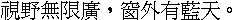

字样资料 / Windows 3.1 MINGLI
Windows 3.1 MINGLI20 · 20×20
基本Big5汉字13,061/13,061；另2兼容字，共13,063唯一Han、13,065原Han变体，十／卅原别名保留且全体原汉字矩阵互异。GB2312汉字4,383/6,763，非完整简体。原层95个可打印ASCII为10×20，空格为空；本固定图未展示，不外补。 · 20×20 · 繁体
放大观察 · 3×

原尺寸 · 1×
来源与字样信息
- 家族
- Windows 3.1 MINGLI
- 排版说明
- 按原20×20框等宽排列批准固定句，不补ASCII、不裁框、不借字。20px字进仅为预览排版，原运行时bearing、baseline与advance未完全恢复。1×240×20，4×960×80为严格整数复制。
- 字符框
- 20×20 px
- 字符范围
- 繁体
- 样本文字
- 視野無限廣，窗外有藍天。
- 覆盖说明
- 基本Big5汉字13,061/13,061；另2兼容字，共13,063唯一Han、13,065原Han变体，十／卅原别名保留且全体原汉字矩阵互异。GB2312汉字4,383/6,763，非完整简体。原层95个可打印ASCII为10×20，空格为空；本固定图未展示，不外补。
- 缺字
- 样文无缺字
- 样张类型
- Windows 3.1繁体保存件中的CWIN30原存20×20；固定中文标点预览。
- 风格
- 未分类
- 用途
- 历史屏幕字库
- 字形来源
- Windows 3.1 Traditional Chinese 3.10.151第三方保存件MINGLI20.FON，CWIN30预存1-bit 20×20。成员日期1993-05-02仅为保存元数据，不认证设计年、微软原盘或作者。同包旧MINGLI.TTF存在CompuFont/MingLi43异常，不能据其猜测本层谱系。
- 授权状态
- 未确认开放再分发授权
- 许可说明
- 保存来源、散列核验和原程序证据不等于开放再分发许可。仅提供固定小样、必要事实及无字模离线重绘方法，不公开原包、完整字体、程序、字模数组或字库子集。
- 说明
- 与现库MingLiU20近缘：13,063共同Han，1,794墨迹精确相同，完整墨迹±1px比较均Dice 0.845565947，4,499字低于0.80；非近整层复制，不据此称独立原创。已核250记录、46补充层及19原池加CCDOS原槽阈值控制，最高近邻经独立全量复核；仍有12个原源／布局未闭合及参考图限制，不称全库穷尽。同包MINGLI24与HITECH全部13,494共同原码原格反相后全同，不另增24款。
- 获取方式
自行取得有权处理且SHA匹配的本地源文件；工具只离线重绘批准固定样文的1×或4×PNG，不联网、不执行旧程序、不导出任意文字或完整字体。
- 来源
- Windows 3.1 Traditional Chinese保存介绍页
- 原生证据
说明：原CWIN30头、同包驱动寻址、所有13,906原槽解码与字节回填已独立核验；不证明上游逐点手绘。
source_sha256：5b0d5a506b03b9f6ab981ff220c1e14aafda7966960cc4234ba3bb6f76003b09
sourceBytes：832088
compressedSha256：f6a29a5083186e56cabaac7acc08cb2d672776b277f0512557cfe76142aaf05f
compressedBytes：643392
bitDepth：1
big5Han：13061
big5ExpectedHan：13061
compatibilityHan：2
big5SourceHanVariants：13065
physicalSlots：13906
printableAscii：95
asciiCellWidth：10
asciiCellHeight：20
asciiShownInPreview：False
查看原生设计来源
字体使用与再分发按原来源许可执行。